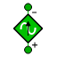

| e_n | PORTS_LIB.elec | IN | Negative pin | ||
| e_p | PORTS_LIB.elec | IN | Positive pin |
| Ioffset | REAL | 0 | Current offset | A | |
| Ipeak | REAL | 1 | Current amplitude | A | |
| freqHz | REAL | 1 | Frequencies of sine waves | Hz | |
| phase | REAL | 0 | Phases of sine waves | rad | |
| startTime | REAL | 0 | Output = offset for time < startTime | s |
| i | REAL | Current flowing from pin e_p to pin e_n | A | ||
| v | REAL | Voltage drop between the two pins = e_p.v - e_n.v | V |
| current | CurrentSignal | |
| source | Sine |
| source.amplitude | Ipeak | DATA | REAL | Amplitudes of sine waves | "-" |
| source.freqHz | freqHz | DATA | REAL | Frequencies of sine waves | "Hz" |
| source.offset | Ioffset | DATA | REAL | Offsets of output signals | "-" |
| source.phase | phase | DATA | REAL | Phases of sine waves | "rad" |
| source.startTime | startTime | DATA | REAL | Output = offset for time < startTime | "s" |
Document generated automatically (Date: 2019:01:23, Time: 00:19:10)